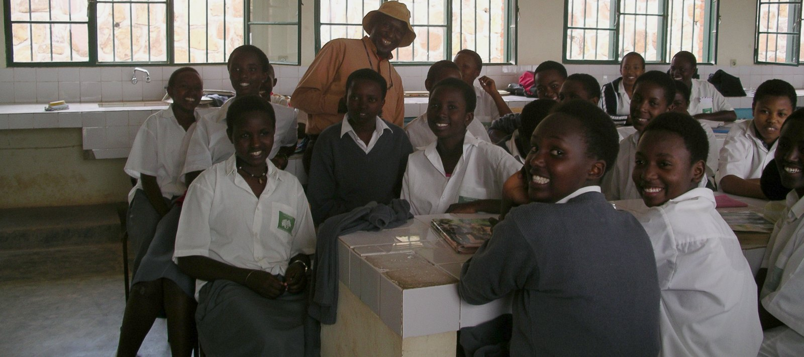
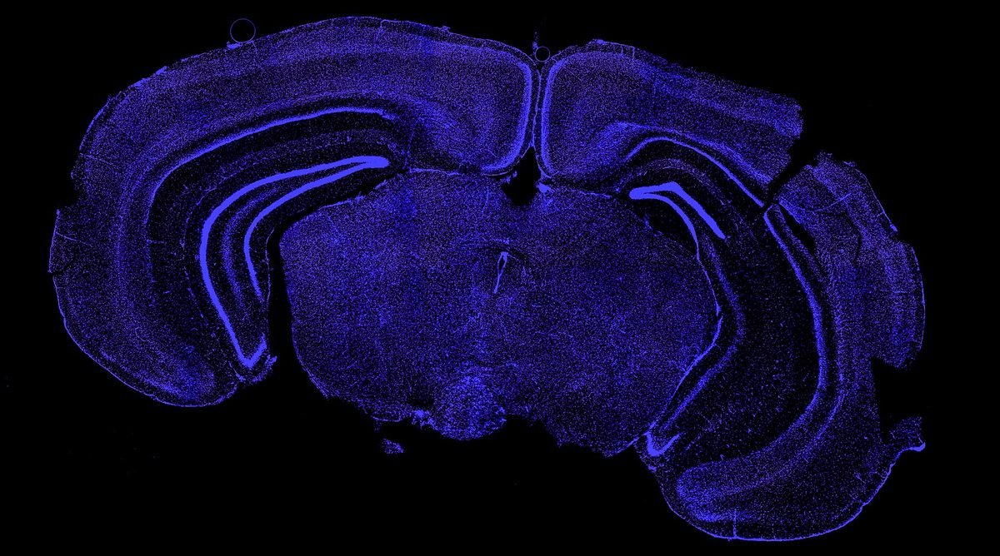
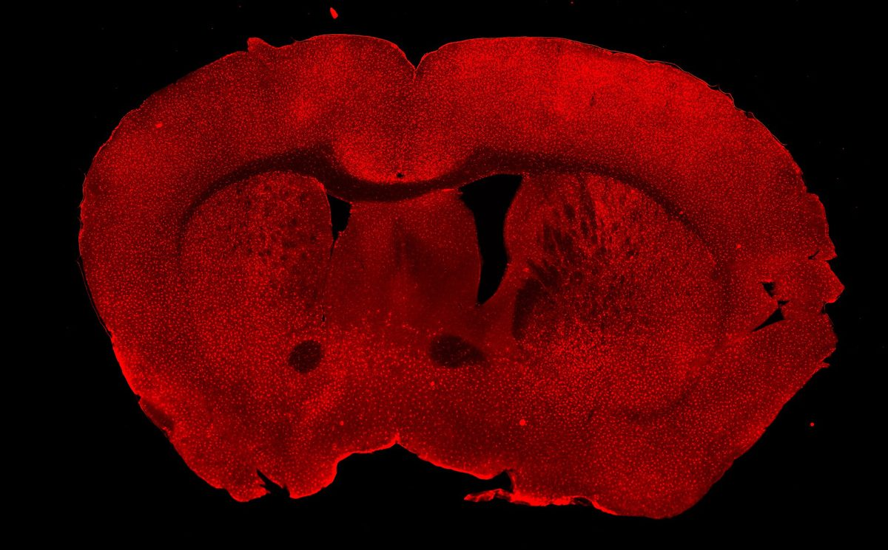
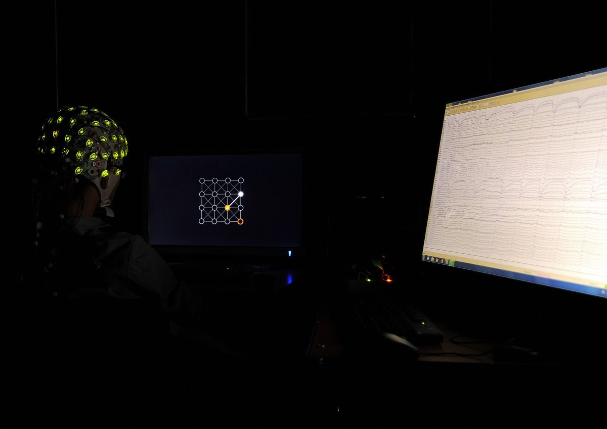
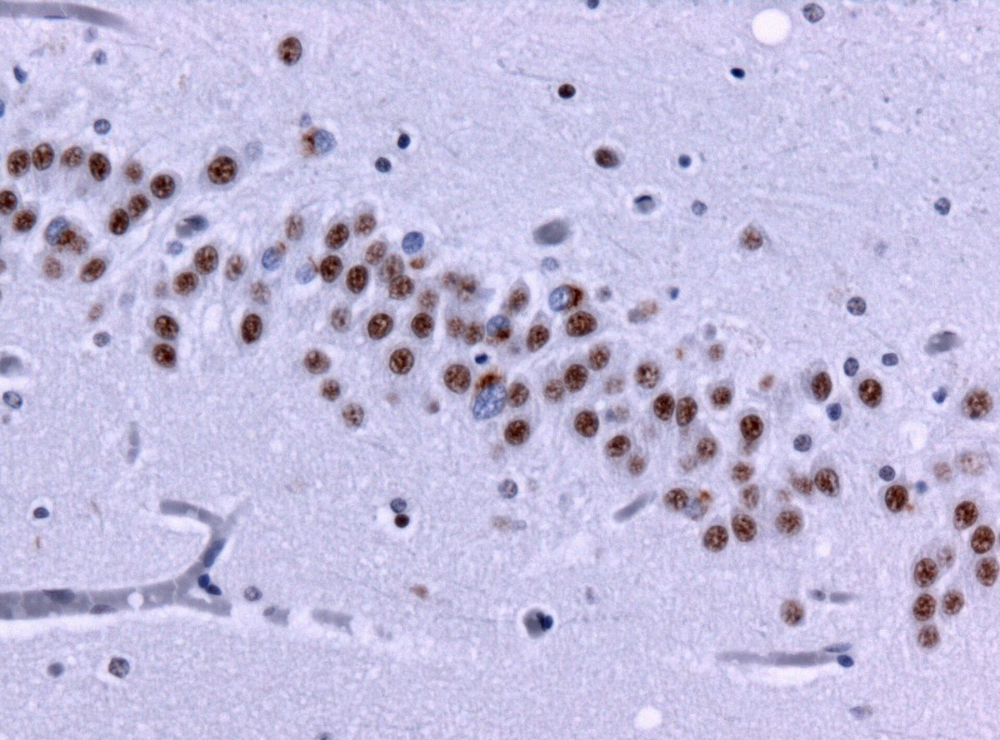
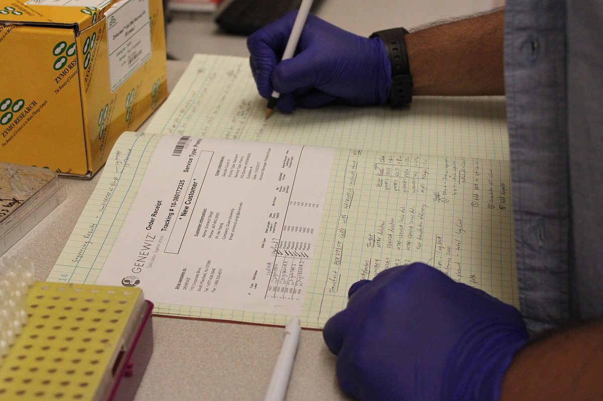
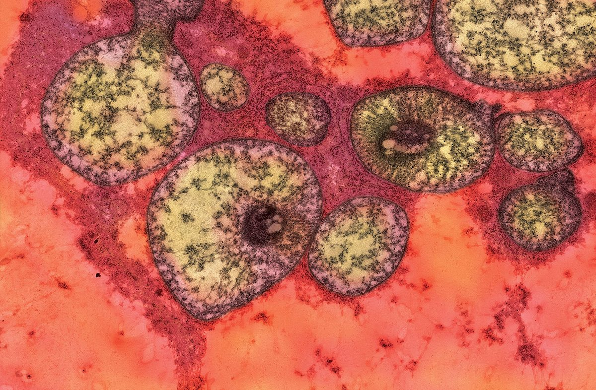

A Beginner's Guide to BCIs
Control a robotic arm, play video games, or send messages — all with your mind. BCIs are going from sci-fi to reality.
Neuroscience and brain-computer interface research, explained clearly by students — and free for everyone.
Every piece is written by a student and checked against peer-reviewed sources. No paywall, no PhD required.
Browse all articles →
Control a robotic arm, play video games, or send messages — all with your mind. BCIs are going from sci-fi to reality.

New discoveries in neuroengineering are pushing telepathic communication closer to reality than ever before.

What happens when you build a computer with living human brain cells? The implications for AGI are enormous.
Six-minute explainers on the research shaping how we read, repair and interface with the brain.
All videos →
Oliver Payne · NeuroView YouTube

Joseph Sun · NeuroView YouTube
Students who used our lecture decks and Kahoots to launch neuroscience clubs at their own schools.
“NeuroView's pre-made lectures and slide decks were perfect for helping me start my own neuroscience club at my school! Their guidance and support have been extraordinary, and have made running a club much easier!”
“NeuroView has helped me make my own club at my school, even though I had no prior knowledge.”
Neuroscience shapes medicine, technology, and public policy — yet only 18% of Americans understand cognitive impairments. NeuroView exists to change that. No PhD required.
Start exploring →Written by students, reviewed for scientific accuracy using peer-reviewed sources. No PhD required.
Imagine controlling a robotic arm, playing a video game, or sending messages — all using just your mind. BCIs are quickly making this a reality.

Interning at biotech labs in both the US and China — I expected technical similarities. Science is universal, right? What surprised me were the differences.
Have you ever wondered what it would be like to know what someone is thinking at any moment? A new discovery in neuroengineering is getting us closer.
Imagine a computer built not just from silicon, but from living human brain cells. Biocomputing has major implications for the race toward Artificial General Intelligence.

Your brain is not fixed. Neuroplasticity explains how experience, learning, and environment reshape neural circuits — throughout your entire life.

Your heart stops. No more oxygen. But your brain isn't done yet — scientists have recorded brain activity up to 10 minutes after clinical death.

Student-led initiatives in Rwanda are driving social change — showing how youth can transform communities through education and leadership.
Visual explainers on neuroscience and BCI research, presented by the NeuroView team.
Oliver Payne · Functional MRI, BOLD signal, brain imaging applications
Joseph Sun · Brain organoids, AI, implications for AGI
Subscribe to @the_neuroview for new videos on neuroscience, BCIs, and more.
Free, ready-to-use lecture decks + Kahoots for neuroscience, immunology, and bioengineering. Perfect for launching or growing a science club.






Fill out the form on the Start a Club page and we'll send you additional materials.
Lecture covers are Wikimedia Commons files, reused under the licences below.
Student researchers, writers, and educators making neuroscience accessible from Palo Alto and beyond.


Writing, content creation, and outreach roles are open.
No experience required. We provide everything you need to launch, run, and grow a science club at your school — for free.
Tell us about your school and what kind of club you want to start. We'll reach out within a few days.
We send free slide decks, Kahoots, and materials tailored to your club's focus and experience level.
Use our ready-to-go lectures to run an engaging first session. We're here for any questions you have.
Keep getting new materials as you grow. Join our growing network of student-run neuro clubs across the US.
Email us and we'll send you everything you need to launch your club.
We're always looking for curious students who want to make neuroscience accessible. No prior experience required — just genuine interest and a willingness to learn.